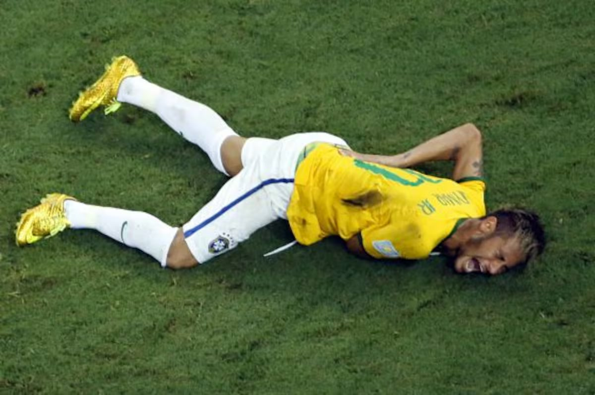
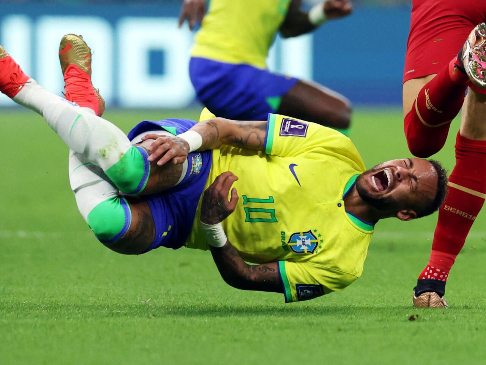
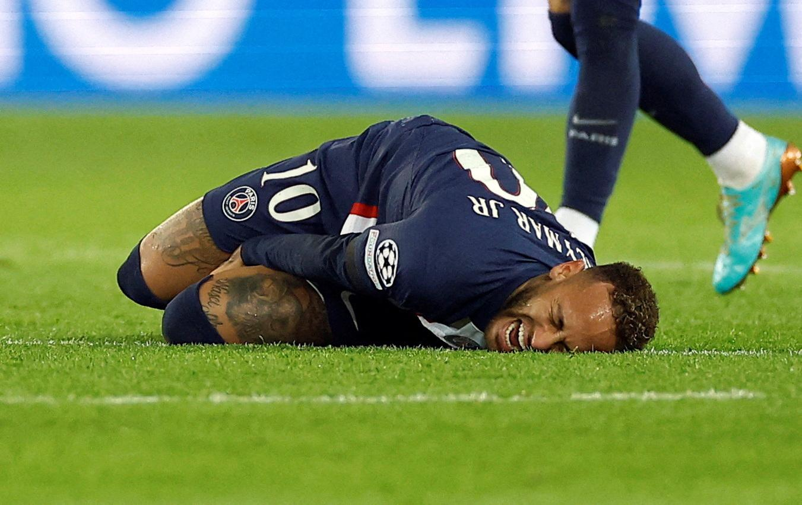

Trilha do Craque #08
O último ato na Vila?
Foto: reprodução
1992
01 · Origem
Mogi das
Cruzes,
05/02/1992.
1992Do futsale do futebol de rua.
1999–2003Portuguesa SantistaAs primeiras escolinhas.
2003 · aos 11 anosBase do Santos
02 · A estreia
Anos.
07/03/2009 · Paulista
Santos 2×1 Oeste
2009 · ESTREIA · 2009 · ESTREIA · 2009
2011 2011
03 · O auge na Vila
2011.
Campeão da
Libertadores
e melhor jogador do torneio, aos 19.
Prêmio Puskás · FIFA 2011
O gol mais bonito do mundo
Santos 4×5 Flamengo · 27/07/2011
04 · Barcelona
O trio que ganhou tudo.
Final da Champions · Berlim · 06/06/2015
Barcelona 3×1 Juventus
Neymar fez o terceiro gol.
39 gols de Neymar em 2014-15
05 · Barcelona → PSG · 03/08/2017
A transferência
mais cara
da história.
€
Milhões
€222M · €222M · €222M · €222M · €222M · €222M
2022
2023

Copa 2014Vértebra

Copa 2022Tornozelo

PSG · 2021 e 2023Tornozelo
Out/2023 · pela Seleção
Joelho esquerdo. Quase um ano parado.
De volta ao Santos · 2025
Fotos: reprodução
Fotos: reprodução
80 GOLS · 130 JOGOS · 80 GOLS · 130 JOGOS
07 · Seleção Brasileira
Gols.
O maior artilheiro da história
130jogos
4Copas
2016ouro olímpico
31/12 · 31/12 · 31/12 · 31/12 · 31/12
08 · Hoje
O contrato
tem data
para acabar.
31/12
2026
E agora?
Fica,
ou é o
último ato
na Vila?
Comenta o craque que você quer no próximo episódio.
CAMISA 10 GYN@camisa10gyn